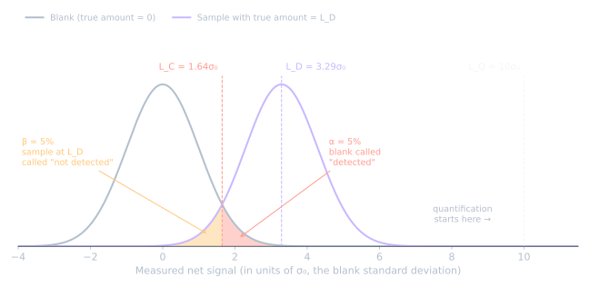

여기서 시작하는 이유
미량 분석의 성적서에는 거의 언제나 "검출한계"나 "MDL"이 적혀 있습니다. 표준·규제·장비 소프트웨어에서 쓰는 정의 대부분은 논문 한 편으로 거슬러 올라갑니다.
인용: L. A. Currie, "Limits for Qualitative Detection and Quantitative Determination: Application to Radiochemistry", Analytical Chemistry, 1968, 40, 586–593.
이름에 관해: 저자는 Lloyd A. Currie(-ie)입니다. "Curry"로 잘못 쓰는 경우가 많습니다.
1968년의 문제
Currie가 검출한계를 발명한 것은 아닙니다. 검출한계는 이미 널리 쓰였지만 합의가 없었습니다.
- 문헌마다 다른 공식과 용어를 썼습니다.
- "보이는가?"와 "잴 수 있는가?"라는 서로 다른 질문에 같은 말을 썼습니다.
- 흔히 쓰던 계산법 중 일부는 통계적 근거가 없었습니다.
얼마나 심각한지 보이려고 Currie는 흔한 계산법 8가지를 하나의 계수(counting) 예제에 적용했습니다. 결과는 거의 1000배까지 차이가 났습니다.
제안: 세 가지 한계
Currie는 문제를 통계적 의미가 분명한 세 가지 한계로 나눴습니다.
| 한계 | 의미 | 블랭크를 잘 알 때 | 블랭크·시료 쌍 측정 |
|---|---|---|---|
| LC, 판정한계 | 판정 기준점: 이보다 크면 "검출됨"으로 판정 | 1.64 σ₀ | 2.33 σ₀ |
| LD, 검출한계 | 높은 확률로 검출되는 가장 작은 실제 양 | 3.29 σ₀ | 4.65 σ₀ |
| LQ, 정량한계 | 결과의 상대 불확도가 허용 수준(여기서는 10%)이 되는 농도 | 10 σ₀ | 14.1 σ₀ |
σ₀는 블랭크의 표준편차입니다. 계수는 다음을 가정합니다.
- α = 0.05: 블랭크를 "검출됨"으로 판정할 확률(위양성)
- β = 0.05: 실제로 LD인 시료를 놓칠 확률(위음성)
- 농도에 따라 변하지 않는 표준편차
핵심: LC와 LD는 다르다
실무에서 가장 자주 잊히는 부분입니다.
- LC는 측정 결과에 관한 것입니다. 판정 규칙이며, 위양성만 관리합니다.
- LD는 시료 속 실제 양에 관한 것입니다. 위음성까지 관리합니다. α = β = 0.05이면 LC의 약 2배입니다(3.29 대 1.64).
정의에서 바로 나오는 결과가 있습니다. 시료에 실제로 딱 LC만큼 들어 있으면 측정값은 LC 주변에 흩어지므로, "검출됨"으로 판정되는 것은 절반 정도뿐입니다.
그리고 어느 한계도 그 숫자가 좋은 측정값이라는 뜻은 아닙니다. 정량 결과는 대략 LQ부터이고, 이는 LD의 약 3배입니다(10 대 3.29).
그림 한 장으로

읽는 법
- 회색 곡선: 아무것도 없는 블랭크에서 얻는 결과. 0 주변에 표준편차 σ₀로 흩어집니다.
- 청록 곡선: 실제 양이 정확히 LD인 시료의 결과. 같은 σ₀로 LD 주변에 흩어집니다.
- 빨간 점선, LC = 1.64σ₀: 판정 규칙. 오른쪽 결과는 모두 "검출됨"으로 보고합니다.
- 빨간 꼬리(α = 5%): LC 오른쪽에 떨어진 블랭크 결과. 위양성입니다.
- 주황 꼬리(β = 5%): LC 왼쪽에 떨어진 LD 시료 결과. 놓친 검출입니다.
LD 계산법
LD는 두 꼬리가 모두 5%가 되도록 정합니다. 각 꼬리는 곡선 중심에서 1.645σ₀ 떨어져 있으므로:
- LC = 1.645σ₀ (블랭크 곡선의 95번째 백분위수)
- LD = LC + 1.645σ₀ = 3.29σ₀
LQ는 훨씬 오른쪽 10σ₀에 있고, 여기서 표준편차 하나가 값의 10%입니다. 숫자가 예·아니오가 아니라 측정값이 되는 지점입니다.
그림을 직접 만들려면: python make_figure.py (numpy, scipy, matplotlib 필요).
그 이후
NIST에 따르면 Currie의 틀은 측정 실무, 국제 표준, 규제, 소프트웨어 전반에 받아들여졌습니다. 이는 검출·판정·정량 한계에 관한 ISO–IUPAC 통합 입장으로 이어졌고, 지금은 IUPAC 분석 용어집의 일부입니다.
이 시리즈의 나머지 글은 실무에서 쓰는 두 정의를 Currie와 비교합니다.
실무 정리
- "불검출"은 "0"이 아닙니다. LC 미만인 시료에도 약 LD까지는 확실히 보이지 않은 채 들어 있을 수 있습니다.
- "검출됨"은 "측정됨"이 아닙니다. LC와 LQ 사이는 신중히 보고하거나, 검출되었으나 정량하지 않음으로 보고합니다.
- 어느 한계인지 항상 밝히세요. "검출한계"만으로는 LC인지 LD인지 알 수 없고, 둘은 2배 차이입니다.
이 글을 만든 방법
AI 도우미(Claude)로 자료를 찾은 뒤, Currie 논문에 대한 NIST 해설을 직접 읽고 모든 수치를 대조했습니다. 그 과정에서 하나를 바로잡았습니다. 저자 이름은 Curry가 아니라 Currie입니다.
참고문헌
- L. A. Currie, "Limits for Qualitative Detection and Quantitative Determination: Application to Radiochemistry", Anal. Chem., 1968, 40, 586–593.
- NIST, commentary on Currie (1968), NIST SP 958, pp. 164–166.